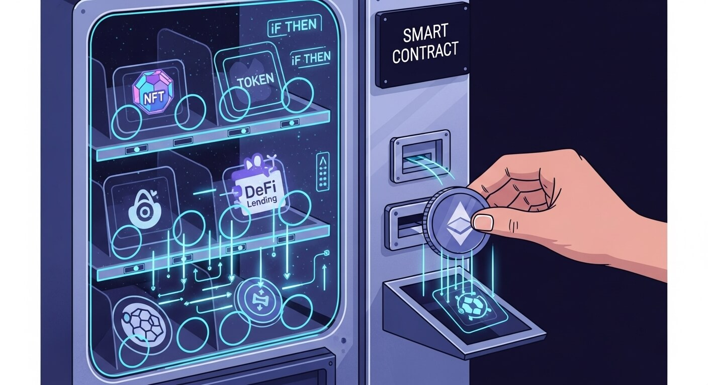

Key Takeaways
- Self-executing code contracts: Smart contracts are programs on a blockchain that automatically carry out agreements when specific conditions are met. They run exactly as coded, without human intervention.
- Trustless transactions: These contracts remove the need for a middleman (like a bank or lawyer) by enforcing rules with computer code. Parties can transact directly and confidently, without relying on a central authority.
- Diverse use cases: Smart contracts power many applications—from creating tokens (cryptocurrencies and NFTs) to enabling decentralized finance platforms, blockchain gaming items, supply-chain tracking, and crowdfunding.
- Risks of “code is law”: Smart contracts aren’t actually “smart.” Once deployed, they usually can’t be changed. Bugs or mistakes can lead to loss of funds with no easy way to recover them.
What Is a Smart Contract?
Smart contracts are digital agreements written as code and stored on a blockchain. They self-execute when predetermined conditions are met. In simple terms, a smart contract acts like a computerized set of “if-then” instructions: If the required input or event is received, then the contract carries out the corresponding action.
Smart contracts run on decentralized networks such as Ethereum, so no single person or company controls them. Once a smart contract is active on the blockchain, its terms generally can’t be altered, making it tamper-resistant and transparent.
Analogy: Think of a smart contract like a vending machine. You insert the correct amount and select an item; the machine automatically dispenses your snack. Similarly, a smart contract executes an agreement once its conditions are met—no clerk or broker needed.
Use Cases of Smart Contracts
Here are common scenarios where smart contracts enforce rules automatically:
- Token Creation (Cryptocurrency & NFTs): A contract defines a token’s properties and tracks ownership, ensuring uniqueness and secure transfers.
- Decentralized Finance (DeFi): Lending, trading, and interest-earning platforms rely on contracts that hold collateral, release funds, and settle trades with no bank involved.
- Gaming (Provable Item Ownership): In-game assets become NFTs governed by contracts, so players truly own, trade, or sell their digital items.
- Supply-Chain Automation: A contract can release payment automatically once delivery is confirmed, logging each shipment step on-chain.
- Crowdfunding & Charity: Funds stay locked until a goal is met; if the deadline passes without success, the contract refunds contributors automatically.
Limitations & Risks of Smart Contracts
Despite their benefits, smart contracts have notable drawbacks:
- Not truly “smart” or legal: They only do what they’re coded to do and may not align with legal contract standards.
- Immutability: Once deployed, code is hard to change. The 2016 “DAO hack” showed how a single bug can lead to millions lost.
- Reliance on Oracles: Contracts need external data feeds (oracles) to know off-chain events, introducing trust and security risks.
- No judgment or intent: A contract can’t interpret context; it will execute even if the outcome is unintended or unfair.
Risks & Important Considerations
- “Code is law” — irreversible actions: If a flaw exists, the blockchain will still execute it, and effects are usually permanent.
- Not actually smart (or fair): Contracts blindly follow code, without flexibility or built-in dispute resolution.
- No dispute resolution: Blockchain won’t mediate disagreements; outside legal action may be required.
- Educational content — not financial advice: Examples illustrate concepts only and are not endorsements.
- Bugs and exploits can be costly: Vulnerabilities have led to major losses; audits and caution are essential.
- Need for audits and caution: Thorough testing and independent security reviews are critical before using or launching a contract.
The following links are provided for educational and informational purposes only. Literacy & Innovation in Financial Technology Alliance (LIFT) does not endorse any of the organizations, products, services, or opinions presented on these external sites. LIFT is not responsible for the accuracy or content of external sites. We encourage you to conduct your own research.
Further Reading & Sources
Disclaimer: This article is for educational purposes only and does not constitute financial advice.